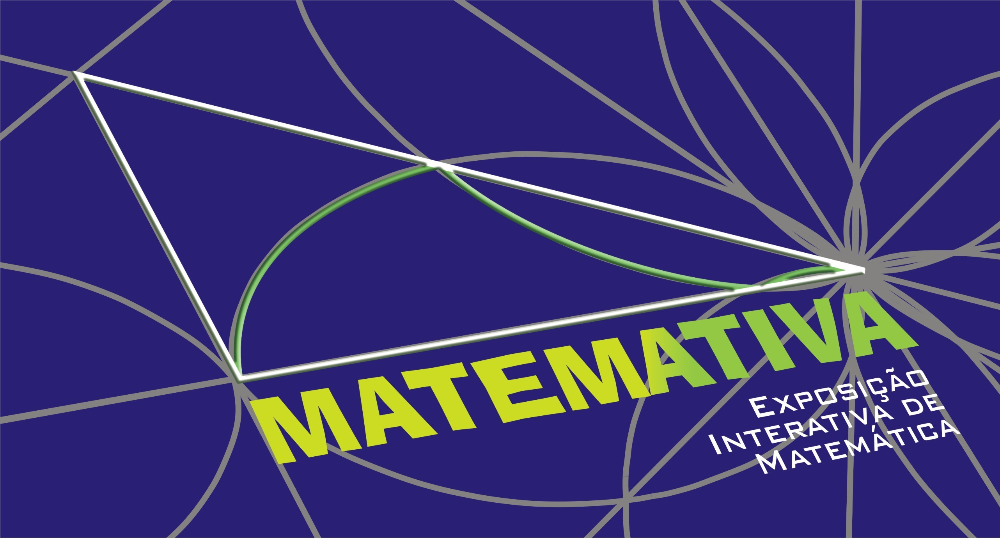

Mecanismo de Hart's
Mova o ponto Q para
construir uma parte de uma reta.
Você pode também alterar o tamanho das barras,
arrastando os pontos E e H.
Para apagar o rastro basta precionar Ctrl + F.
Atualizado em 9 de julho
de 2011
Juniormar Organista, Criado
com GeoGebra

|